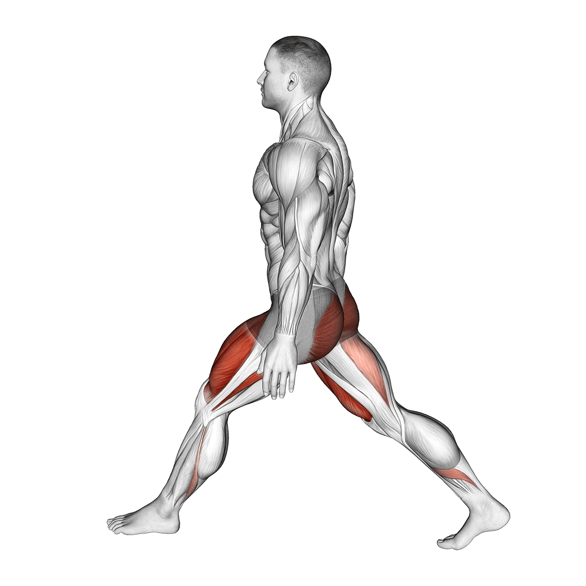

Lábizom gyakorlatok

|
GuggolásÁllj kiegyenesedve egy kétkezes súlyzó rúdját egyensúlyozva a nyakad mögött a hátadon keresztben, és a recézett rúdrészt a súlytárcsák közelében fogva. Tedd sarkaidat egymástól 30-50 cm-re úgy, hogy lábfejeid kissé kifelé mutassanak. Szemeddel nézz egy pontra magad elé, szemmagasságnál kicsit feljebb, és tartsd tekintetedet azon a ponton az egész mozgás során. Ezután lassan hajlítsd be térdedet, és ereszd le tested teljes guggolásba. Tartsd a törzsedet kihúzva, a hátadat egyenesen, és fejedet felfelé (a szem egy ponton való rögzítése segíti ezt) az egész mozgás folyamán. Ha combjaid a padlóval való vízszintes helyzeten túlhaladtak már, akkor lassan emelked fel a kiinduló helyzetbe. Igyekezz a sarkadat mindig a padlón tartani. |
|
|---|---|---|
LábnyújtásÜlj a lábgépbe úgy, hogy térdhajlatód a pad emelőkar felőli oldalának végéhez simuljon. Akaszd be lábfejedet a görgőpárna alá, és fogd meg a pad oldalát a kezeddel, egyenes helyzetben tartva felsőtestedet. A quadricepsz erejét használva, lassan egyenesítsd ki lábadat. Tartsd ki a csúcsösszehúzódást 1-2 másodpercig, majd lassan engedd vissza a lábadat. Ismételd a mozgást az előírt számban. |

|
|
 |
LábhajlitásÜlj a gépbe, támaszd ki a hátadat és tartsd is a támlához szorítva végig a gyakorlat ideje alatt. Akaszd be sarkad a görgőpárnák alá, és nyújtsd ki teljesen a lábad. Fogd meg a pad széleit, és tartsd a csípődet a párnázott felülethez szorítva. A láb kétfejű izmait használva hajlítsd be a lábadat, amennyire csak tudod. Tartsd ki ezt a leginkább összehúzott helyzetet 1-2 másodpercig, majd ereszkedj vissza a kiinduló pontig. Ismételd a mozgást az előírt számban. |
|
KitörésÁllj egyenesen. Egy nagy lépést lépj előre, és kinyújtott lábaddal lassan süllyedj guggolásba. Amint leereszkedtél ebbe a helyzetbe, tégy egy újabb lépést előre a másik lábaddal, úgy, hogy közben kinyújtod az eddig behajlított lábadat, tehát fel-le ereszkedve lépegetsz előre, gyakorlatilag támadóállásban. A másik verzió, ha visszalépsz, és a másik lábaddal lépsz ki, majd azzal is vissza - így egy helyben kilépegetve, "helytakarékosan" tudod végezni a gyakorlatot. |
 | |
 |
Ülő VádligépÜlj be a gépbe, a térdedet szorítsd be a támasz alá úgy, hogy a vádlid megnyújtott állapotban legyen. Akaszd ki a rögzítő kart. Emeld meg a vádlidat amennyire tudod, feszíts rá a felső ponton, majd lassan engedd vissza. Ügyelj rá, hogy ne rugózz az alsó ponton! |
|